📖 Website & interactive palette explorer: https://loukesio.github.io/ltc-color-palettes/
Install package
Install the package using the following commands
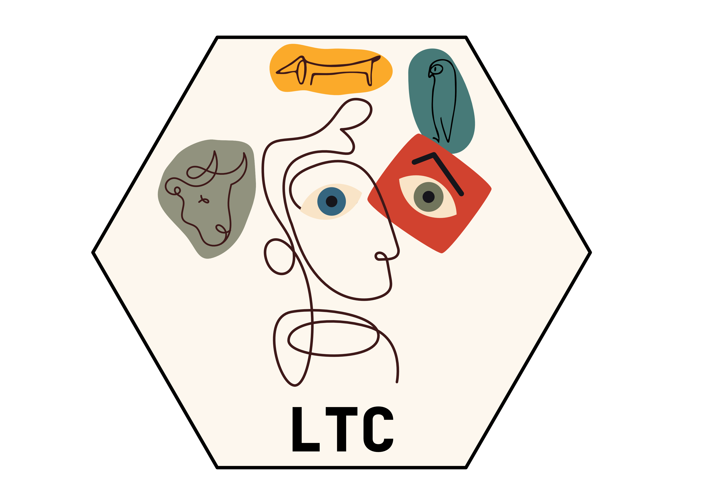
# Install the released version from CRAN
install.packages("ltc")
# Or, if you want the latest development version from GitHub:
# install.packages("devtools")
devtools::install_github("loukesio/ltc-color-palettes")
# and load it
library(ltc)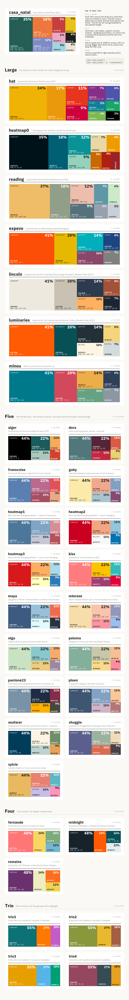
Palettes in action
Every palette in the package, shown across six chart types — a map, a Voronoi treemap, a heatmap, a bubble chart, a barplot and a streamgraph:
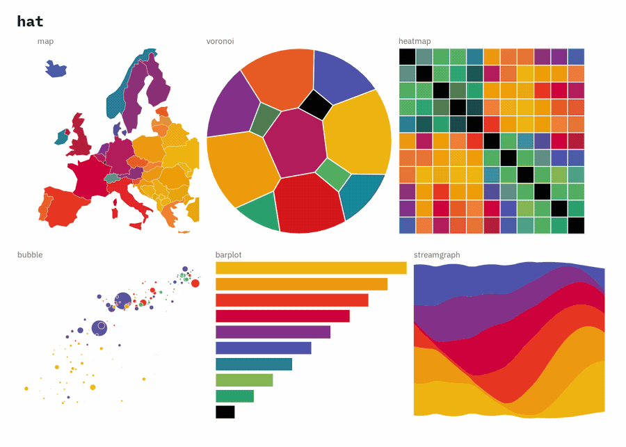
Try them yourself in the interactive palette explorer — switch between palettes, darken or brighten them, and check how they hold up under colour-vision deficiency.
A couple of examples of ltc palettes on real data. Every palette works as a discrete scale, a continuous scale, or a diverging one.
A discrete scale — life expectancy against income across the world in 2007, coloured by continent with the expevo palette:
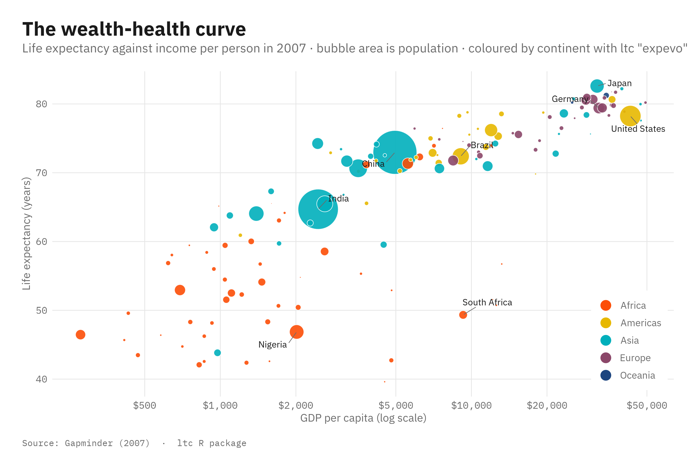
And a continuous scale — estimated GDP per capita across Europe, drawn with the heatmap0 palette:
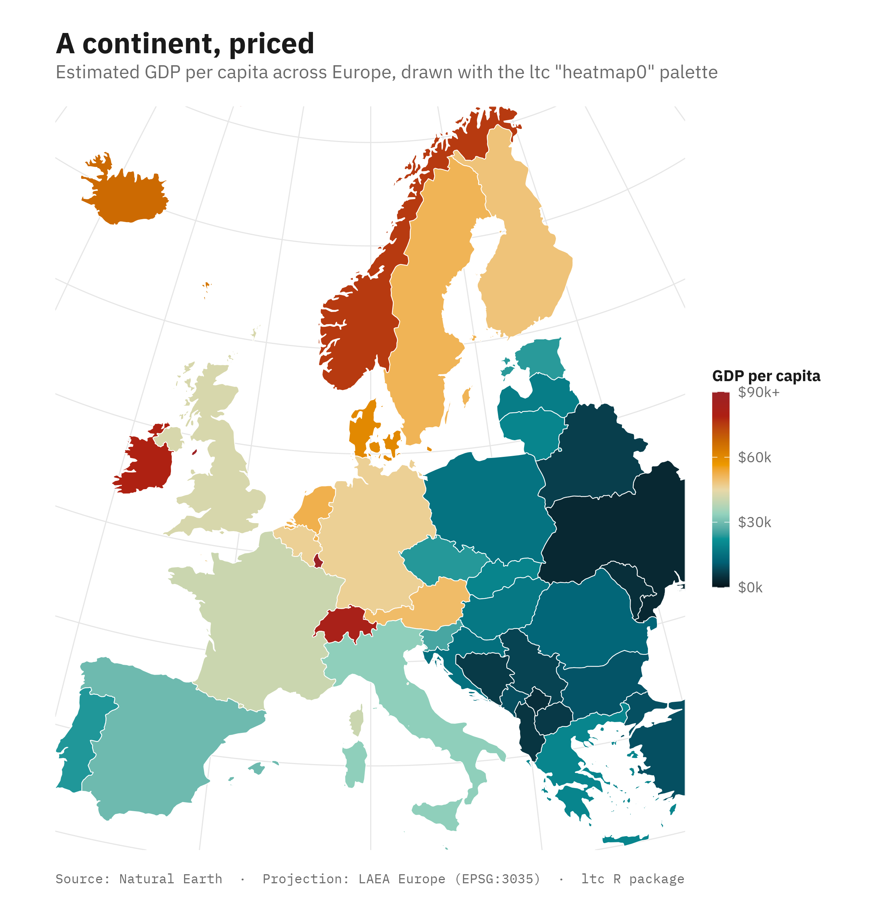
How can I use the ltc package?
Show all palettes
library(ltc)
names(palettes)
#> [1] "paloma" "maya" "dora" "ploen" "olga"
#> [6] "mterese" "gaby" "franscoise" "fernande" "sylvie"
#> [11] "expevo" "minou" "kiss" "hat" "reading"
#> [16] "alger" "trio1" "trio2" "trio3" "trio4"
#> [21] "heatmap0" "pantone23" "remains" "midnight" "lincoln"
#> [26] "luminaries" "seafarer" "shuggie" "heatmap1" "heatmap2"
#> [31] "heatmap3" "casa_natal"Choose the palette you like and print it
- choose it using the
ltccommand.
alger <- ltc("alger") #in this case you select alger- after choosing the palette print it using the
pltccommand!
plot(alger)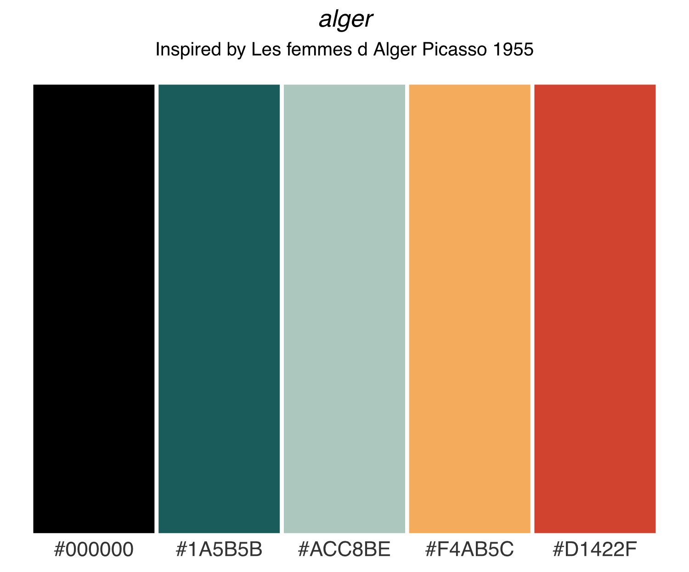
- you can also print the palette you have chosen in a bird-shape, in here we are using
dora
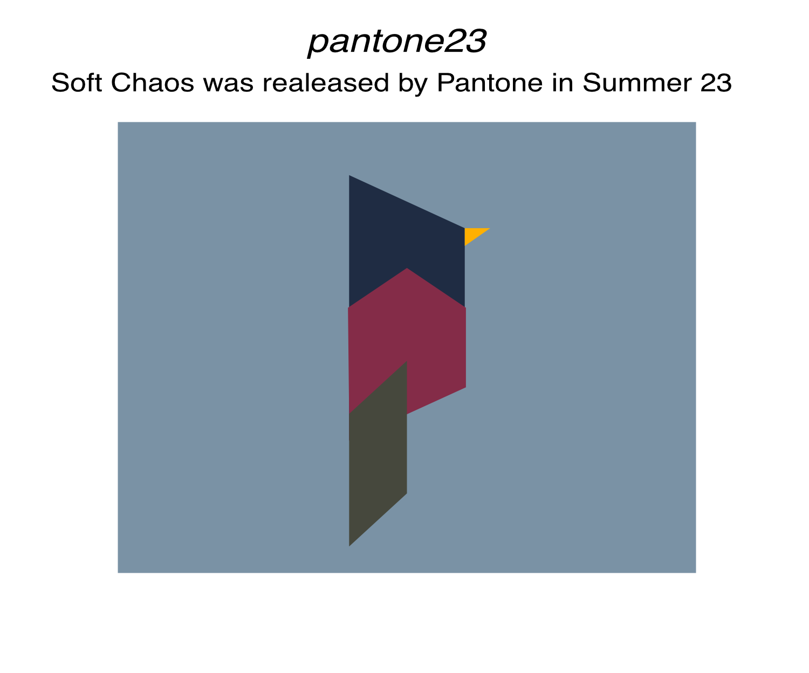
Created on 2023-09-03 with reprex v2.0.2
Adjust a palette — darken, brighten, or desaturate
Every palette can be tuned without leaving the package. adjust_ltc() darkens (negative amount) or lightens (positive amount) the colours, and desaturate_ltc() mutes them:
library(ltc)
adjust_ltc(maya, amount = -30) # darker
adjust_ltc(maya, amount = 30) # lighter
desaturate_ltc(maya, amount = 0.6) # muted
# tune individual colours, or give each its own amount
adjust_ltc(maya, amount = -25, which = c(1, 4))
custom_adjust_ltc(maya, c(-40, -20, 0, 20, 40))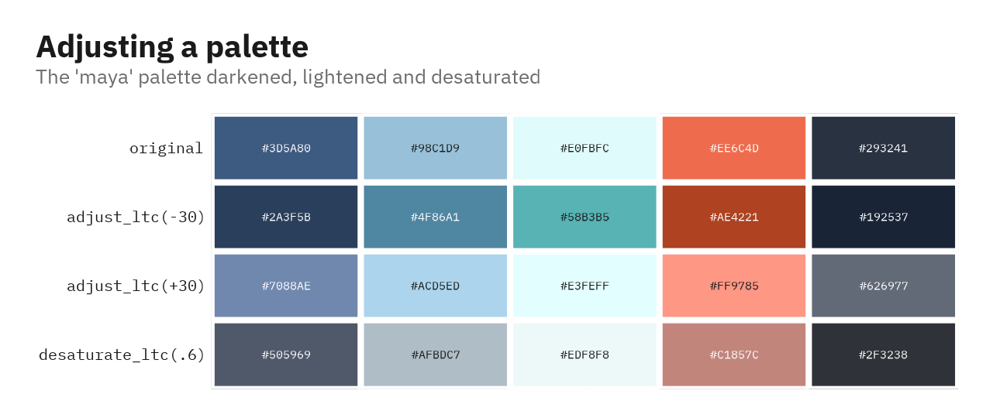
Check colour-vision accessibility
ltc_cvd() simulates how a palette looks to viewers with the three main types of colour-vision deficiency, so you can check that the colours stay distinct:
library(ltc)
ltc_cvd(maya) # normal + deuteranopia / protanopia / tritanopia
ltc_cvd("expevo", severity = 0.6) # milder simulation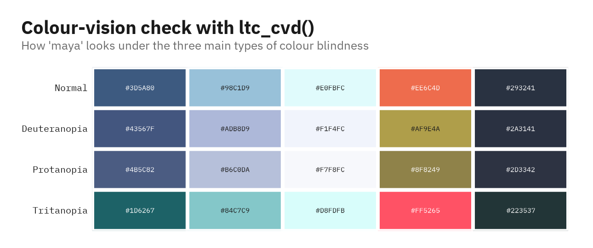
Test how the palette looks like in plots…
- Example 1 - Hexagon diagram
library(ggplot2)
library(ltc)
pal=ltc("heatmap0",10,"continuous")
ggplot(data.frame(x = rnorm(1e4), y = rnorm(1e4)), aes(x = x, y = y)) +
geom_hex() +
coord_fixed() +
scale_fill_gradientn(colours = pal) +
theme_void()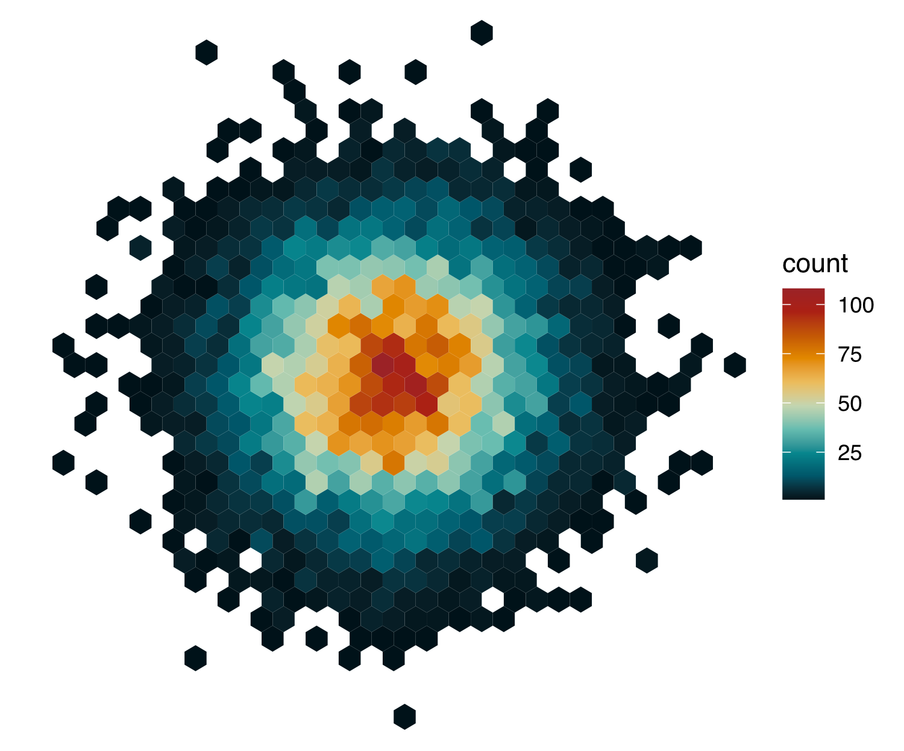
Created on 2023-09-03 with reprex v2.0.2
- Example 2 - Histogram
library(ltc)
library(ggplot2)
pal=ltc("alger",5,"continuous")
ggplot(diamonds, aes(price, fill = cut)) +
geom_histogram(binwidth = 500, position = "fill") +
scale_fill_manual(values = pal) +
theme_bw() +
theme(panel.grid.major = element_blank(), panel.grid.minor = element_blank())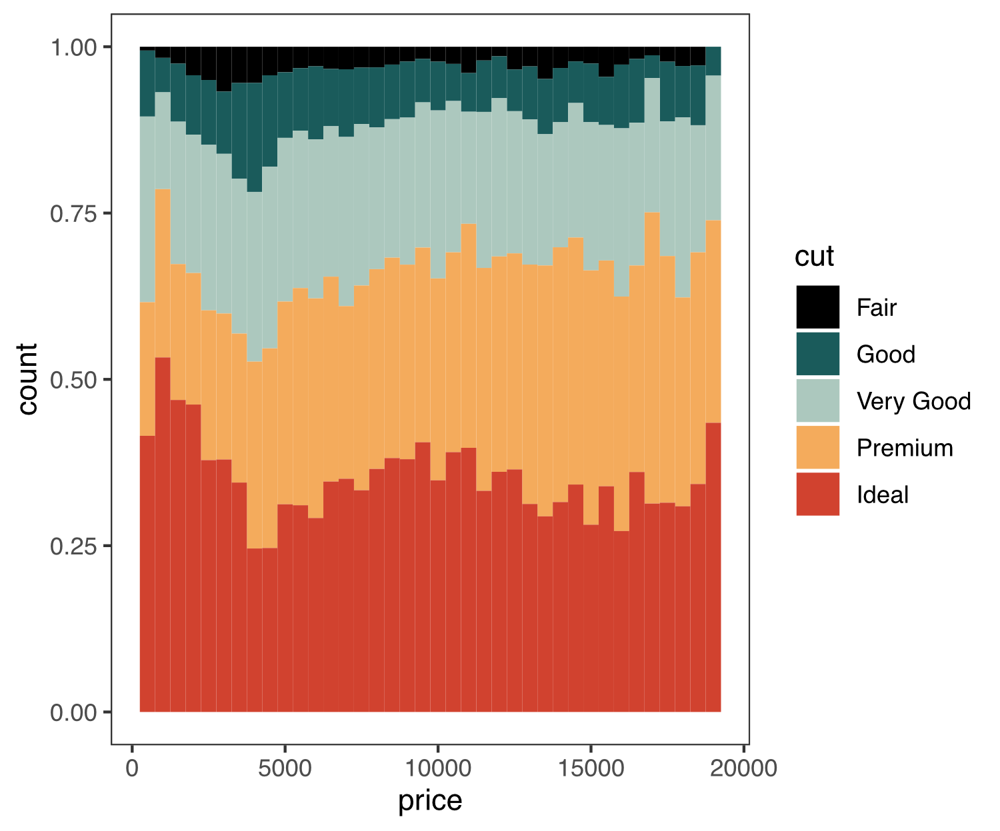
Created on 2023-09-03 with reprex v2.0.2
Contributions
Theltc package is developed and maintained by Loukas Theodosiou (theodosiou@evolbio.mpg.de). For the palettes I drew inspiration from the drawings and life of Pablo Picasso as well as from the following books
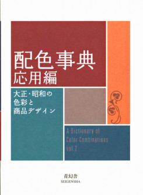